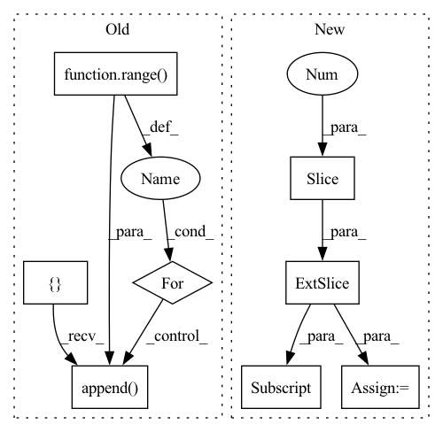

Pattern ID :22018
Before Change
output3d = cotrans.forward_regular(example_clip)
assert torch.allclose(target, output3d)
o = []
// Manual zero pad (due to padding=1 in Conv3d)
zeros = torch.zeros_like(example_clip[:, :, 0])
o.append(cotrans.forward(zeros))
for i in range( example_clip.shape[2]) :
o.append( cotrans.forward(example_clip[:, :, i]))
o.append(cotrans.forward(zeros))
// For debugging:
// close = []After Change
// forward_steps - broken up
cotrans.clean_state()
nothing = cotrans.forward_steps(example_clip[:, :, :-1] , pad_end=False) // init
assert isinstance(nothing, TensorPlaceholder)
lasts = cotrans.forward_steps(example_clip[:, :, -1:], pad_end=True)In pattern: SUPERPATTERN
Frequency: 3
Non-data size: 8
Instances Fragment ID: 69871682
Project Name: lukashedegaard/co3d
Commit Name: 3a1ca5de4898fd89bc774492cf0eeaed905baba1
Time: 2021-09-10
Author: lh@eng.au.dk
File Name: tests/cox3d/test_x3d.py
M Class Name: AnonimousClass
N Class Name: AnonimousClass
M Method Name: test_CoX3DTransform(0)
N Method Name: test_CoX3DTransform(0)
M Parent Class:
N Parent Class:
M File Name: tests/cox3d/test_x3d.py
N File Name: tests/cox3d/test_x3d.py
M Start Line: 601
M End Line: 657
N Start Line: 598
N End Line: 672
Before Change
output3d = cotrans.forward_regular(example_clip)
assert torch.allclose(target, output3d)
o = []
// Manual zero pad (due to padding=1 in Conv3d)
zeros = torch.zeros_like(example_clip[:, :, 0])
o.append(cotrans.forward(zeros))
for i in range( example_clip.shape[2]) :
o.append( cotrans.forward(example_clip[:, :, i]))
o.append(cotrans.forward(zeros))
// For debugging:
// close = []After Change
// forward_steps - broken up
cotrans.clean_state()
nothing = cotrans.forward_steps(example_clip[:, :, :-1] , pad_end=False) // init
assert isinstance(nothing, TensorPlaceholder)
lasts = cotrans.forward_steps(example_clip[:, :, -1:], pad_end=True) Fragment ID: 69871680
Project Name: lukashedegaard/co3d
Commit Name: 85d83724404879a086f4b9ef26aee5f4398830ac
Time: 2021-08-25
Author: lh@eng.au.dk
File Name: tests/cox3d/test_x3d.py
M Class Name: AnonimousClass
N Class Name: AnonimousClass
M Method Name: test_CoX3DTransform(0)
N Method Name: test_CoX3DTransform(0)
M Parent Class:
N Parent Class:
M File Name: tests/cox3d/test_x3d.py
N File Name: tests/cox3d/test_x3d.py
M Start Line: 601
M End Line: 657
N Start Line: 598
N End Line: 672
Before Change
n_samples, horizon, n_assets = simple_returns.shape
res = []
for i in range( n_samples) :
res.append( simple_returns[i] @ weights[i]) // (horizon, n_assets)x(n_assets)=(horizon,)
out = torch.stack(res, dim=0)
After Change
weights_ = weights.view(n_samples, 1, n_assets).repeat(1, horizon, 1) // (n_samples, horizon, n_assets)
if not rebalance:
weights_unscaled = (1 + simple_returns).cumprod(1)[:, :-1, :] * weights_[:, 1:, :]
weights_[:, 1:, :] = weights_unscaled / weights_unscaled.sum(2, keepdim=True)
out = (simple_returns * weights_).sum(-1) Fragment ID: 69871681
Project Name: jankrepl/deepdow
Commit Name: f641c531de3bbae674357327fc5dfa6335164d94
Time: 2020-05-01
Author: jankrepl@yahoo.com
File Name: deepdow/losses.py
M Class Name: AnonimousClass
N Class Name: AnonimousClass
M Method Name: portfolio_returns(5)
N Method Name: portfolio_returns(4)
M Parent Class:
N Parent Class:
M File Name: deepdow/losses.py
N File Name: deepdow/losses.py
M Start Line: 82
M End Line: 87
N Start Line: 48
N End Line: 92